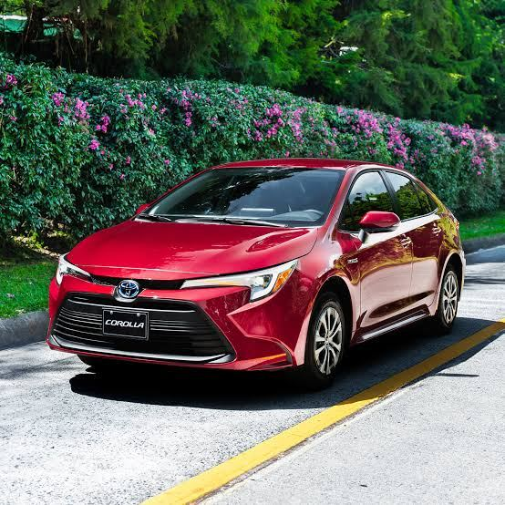
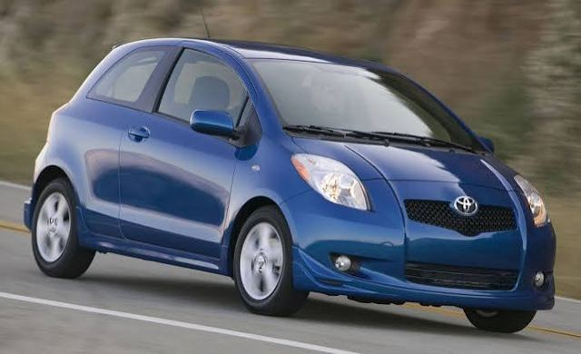
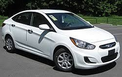
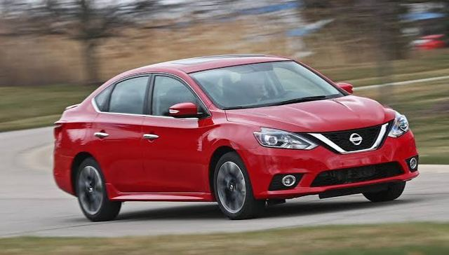
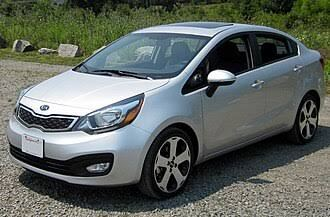
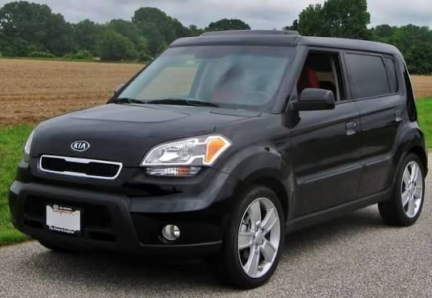
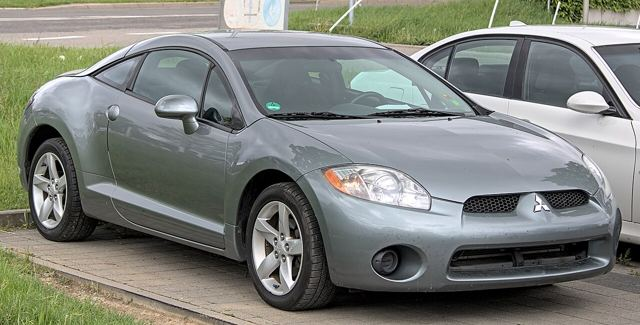
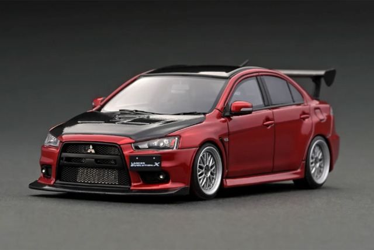

Autos familiares, de ciudad y de trabajo diario. Toca un modelo para ver más.

El sedán más reconocido; muy buena reventa.

Compacto y económico para ciudad.

Primer carro frecuente por precio y equipamiento.

Cómodo, con amplia oferta de usados.

Compacto con buen consumo.

Compacto de formas cuadradas y buen espacio interior.

Coupé deportivo.

Sedán, aquí en versión Evolution.